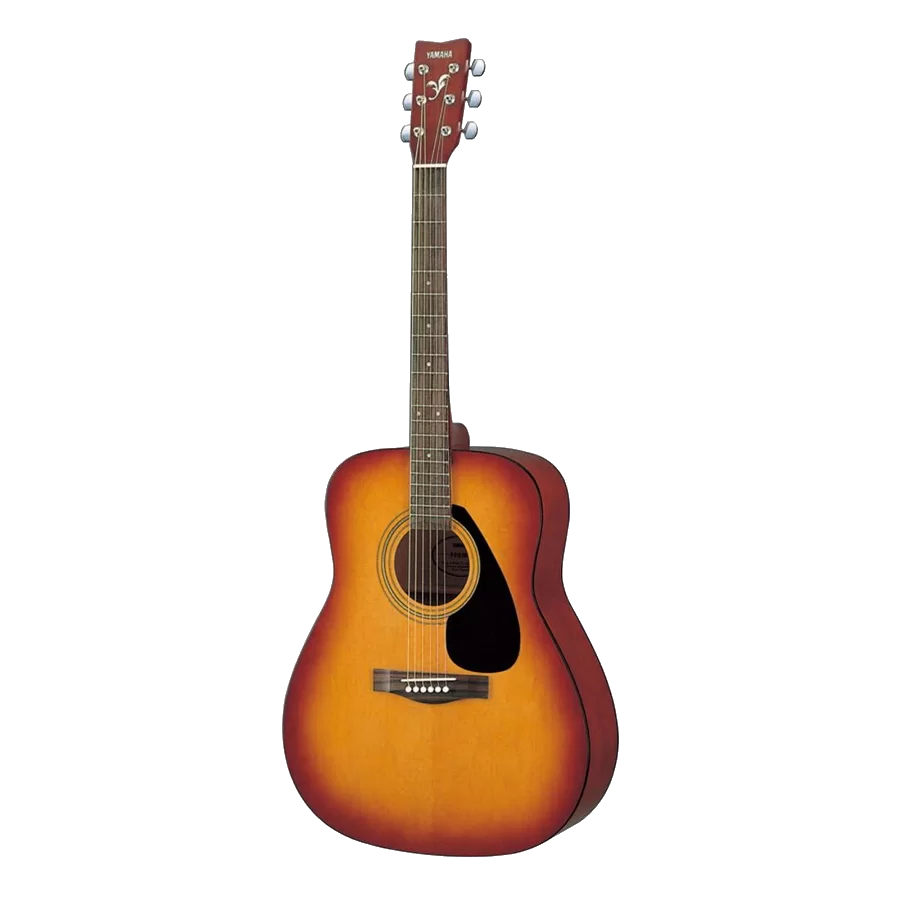
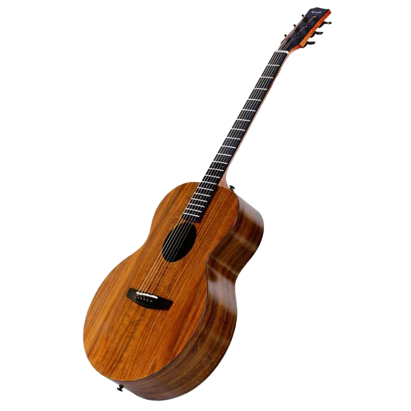
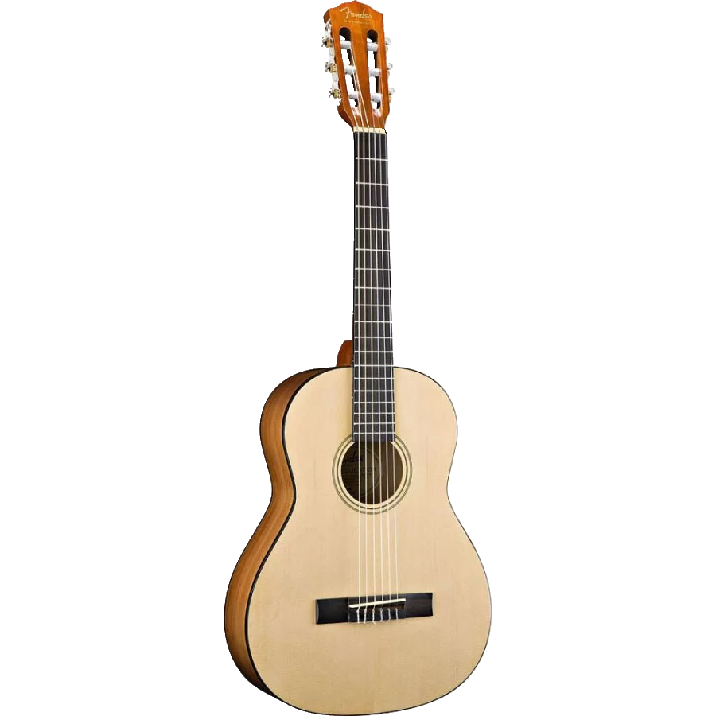
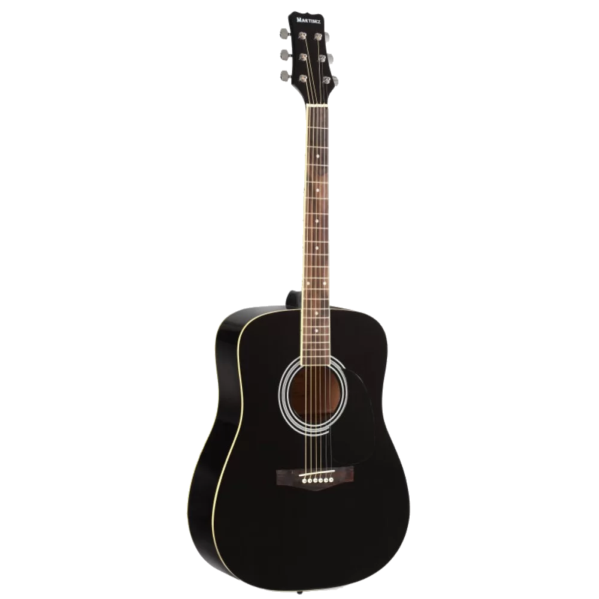
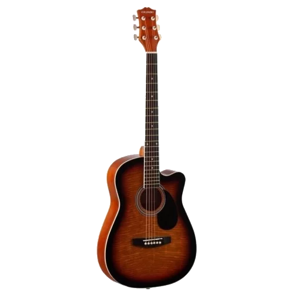

Как выбрать акустическую гитару?
При выборе гитары определенные сложности испытывают даже музыканты, занимающиеся своим любимым делом много лет. Дело в том, что каждая гитара
индивидуальна, оценивать её следует не по характеристикам, а по звучанию. Стало быть, не помешает поход в настоящий магазин, где гитару можно
пощупать, поиграть на ней.
В идеале ваш выбор акустической гитары должен состоять из следующих этапов:
1 Определение бюджета — важный шаг, который повлияет на то, насколько хорошую гитару вы купите. С её примерной ценой лучше определиться заранее,
иначе вы рискуете с каждой зарплатой начинать хотеть купить всё более дорогую акустическую гитару. К слову, не обязательно учиться играть на
дешевом музыкальном инструменте. Поэтому если у вас имеются большие деньги, то берите одну из самых дорогих гитар — она будет служить многие годы.
2 Выбор страны изготовителя и бренда — старайтесь не смотреть в
сторону отечественных гитар, наши фабрики умеют толково делать только классические гитары, да и то с определенными оговорками. Идеальные музыкальные
инструменты создаются японскими и американскими компаниями. В частности, вас обязательно порадует акустическая гитара от Yamaha или Ibanez.
Также отлично звучат немецкие, чешские и корейские гитары.
3 Выбор материала изготовления — любая гитара делается из дерева.
Что немаловажно, верхняя часть деки и боковые стенки могут быть созданы из разных материалов. Нельзя сказать, что какая-то порода
дерева будет лучше или хуже — созданные из них гитары звучат по-разному. Например, ель дает гулкое, четкое и резкое звучание. Боковые
и задние части могут быть выполнены из красного дерева, клёна и палисанда — во всех этих случаях вас тоже ждет разный звук. Оценить
го получится только тогда, когда гитара будет в ваших руках.
4 Проверка качества сборки — заключительный этап. В идеале проверять
гитару нужно перед покупкой. Оцените толщину корпуса — она должна быть приличной, иначе музыкальный инструмент станет пугать своей хрупкостью.
Не забудьте взять гитару в руки на манер ружья, используя корпус в качестве приклада. Таким образом вы сможете посмотреть на плоскость грифа,
убедившись в его ровности. К слову, если гриф приклеен к корпусу, то оцените расстояние между ладом и струной — оно должно составлять не более 4-5 мм.
Рейтинг лучших гитар на взгяд специалистов
YAMAHA F-310
Рейтинг: 4.8

Отличный инструмент начального уровня. Всего за 10 тыс. руб. вы получаете акустическую гитару от известного японского производителя.
Верхняя дека этого инструмента создана из ели — самой дешевой и легкой в обработке породы дерева. Как заверяет производитель, гитара
имеет достойное звучание, ей удается передать даже наиболее тонкие оттенки настроения. Нельзя не отметить и запоминающийся дизайн — инструмент
нельзя назвать рядовым или обычным.
ENYA EA-X1
Рейтинг: 4.7

Ещё одна акустическая гитара, принадлежащая к типу «вестерн». От рассмотренного выше варианта её отличают верхняя дека, обечайки и задняя дека,
имеющие узор KOA HPL. Фактически всё это — ламинат высокого давления. Такой способ нанесения узора является легким и дешевым, однако вряд ли
идеальная его сохранность гарантирована на многие годы.
FENDER ESC80 NATURAL CLASSICAL 3/4
Рейтинг: 4.7

Как понятно по названию, эта гитара имеет размер 3/4. Также несложно заметить, что инструмент принадлежит к классическому шестиструнному типу.
Гитара поставляется без звукоснимателя, как и большинство остальных рассмотренных в нашем рейтинге моделей.
MARTINEZ FAW-702 B
Рейтинг: 4.6

Нет никакого желания приобретать акустическую гитару в привычных светлых тонах? В этом случае рекомендуем взглянуть на MARTINEZ FAW-702 B.
Этот музыкальный инструмент попал в наш рейтинг не только благодаря корпусу, имеющему глубокий черный цвет, но и за счет очень низкой стоимости.
Потратить на покупку гитары 6 тыс. руб. смогут даже многие студенты. Их полностью устроит как дизайн, так и качество изготовления.
Colombo LF-3800CT SB
Рейтинг: 4.5

Наиболее бюджетная акустическая гитара в рейтинге. Как и остальные рассмотренные выше инструменты, принадлежит к типу «вестерн».
От некоторых конкурентов данная модель отличается тем, что она предоставляет 21 лад. Также далеко не каждая гитара способна похвастать
нижней декой, созданной из липы. Впрочем, вы должны понимать, что это не достоинство или недостаток. Это просто особенность изделия,
к которому не нужно относиться предвзято.